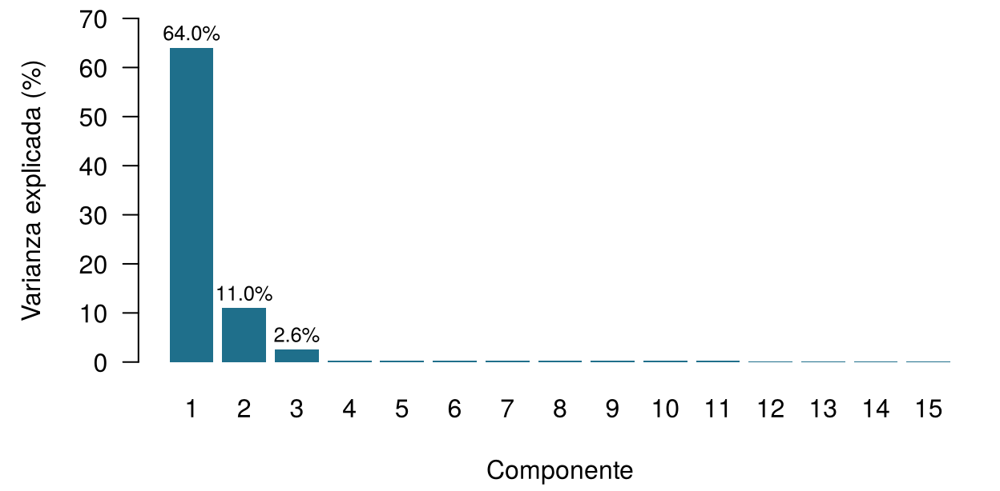
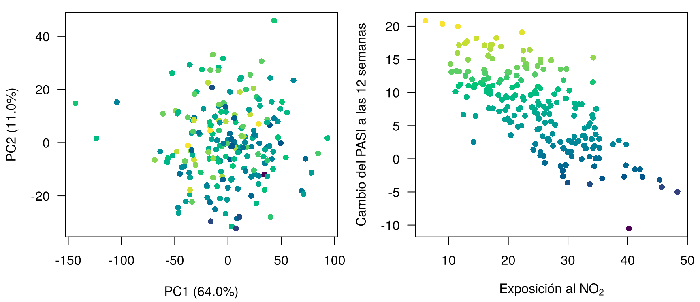
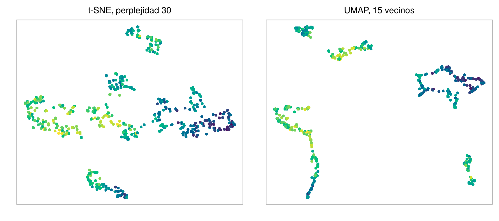
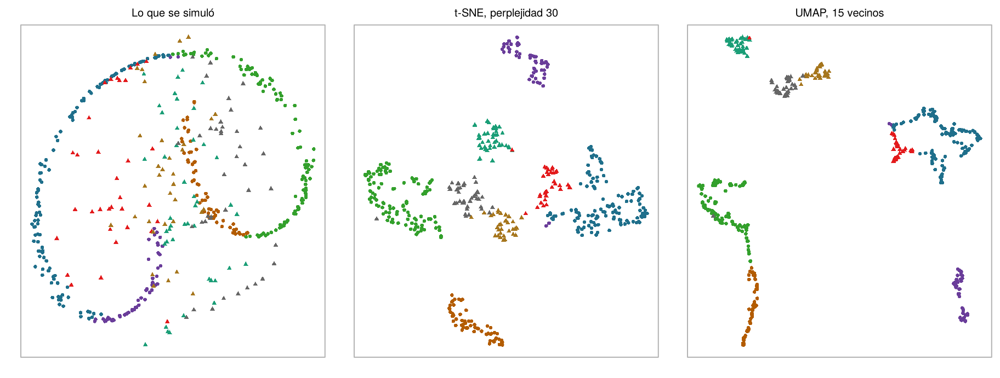

![Izquierda: una dispersión difusa de puntos, con el PASI inicial en el eje horizontal y el NO2 en el vertical, coloreados de oscuro a amarillo según el cambio del PASI, sin ningún agrupamiento visible. Derecha: seis ejes verticales etiquetados PASI, NO2, PM10, gen 1, gen 2 y desenlace, con líneas grises que los cruzan y cuarenta líneas destacadas; las líneas destacadas quedan altas en el eje del desenlace y tienden a quedar bajas en el eje del NO2, y las líneas del gen 1 y del gen 2 van casi paralelas.](ch10.es_files/figure-html/fig-ch10-views-1.png)
10 Datos de alta dimensión y reducción de la dimensionalidad
Cuatro preguntas para calentar. Arriesga tu mejor respuesta; el capítulo explica cada una.
| Pregunta | Tu respuesta |
|---|---|
| Una tabla tiene 200 pacientes (filas) y 1850 mediciones (columnas). ¿En cuántas dimensiones vive cada paciente? | |
| Dos pacientes están en los puntos (1, 1) y (4, 5) de un gráfico. ¿Cuál es la distancia en línea recta entre ellos? | |
| La creatinina pasa a registrarse en µmol/L en lugar de mg/dL (cada valor multiplicado por 88,4). La distancia en línea recta entre dos pacientes descritos por la creatinina y la edad… | |
| Un método que sustituye muchas mediciones por unas pocas variables resumen nuevas, sin mirar ningún desenlace, es un ejemplo de… |
Cómo usar este capítulo
¿Empiezas aquí?
Este capítulo toma prestadas algunas ideas de capítulos anteriores. En una línea cada una:
- Instancias y características. Cada fila de un conjunto de datos es una instancia (un paciente), cada columna una característica; hay \(n\) instancias y \(p\) características, y \(\mathbf{x}_i\) reúne las características de la instancia \(i\) (Definición 1.7).
- El aprendizaje no supervisado busca estructura en las características sin usar un desenlace (Sección 1.6.2). Todo en este capítulo es no supervisado; los desenlaces aparecen solo como colores superpuestos a los resultados después.
- Del Capítulo 3. El método de los \(k\) vecinos más próximos predice a partir de los pacientes anteriores más parecidos, entendiendo “parecido” como cercano en distancia euclídea sobre características estandarizadas (cada característica menos su media, dividida por su desviación típica). Las medias y desviaciones típicas que se usan en un flujo predictivo deben salir solo de los datos de entrenamiento; si no, la estandarización provoca una fuga de información.
- Del Capítulo 4. La colinealidad (predictores fuertemente relacionados) vuelve inestables los coeficientes de regresión; ridge y lasso domestican modelos con más predictores que pacientes. En ONCO-1, los genes 08, 14 y 19 son copias del desenlace que filtran información y se dejan fuera, salvo cuando estudiamos la fuga.
- Del Capítulo 2. La entropía mide la incertidumbre (la sorpresa), en bits.
| Ejemplo | Quién o qué | Desenlace | Caras que vas a conocer |
|---|---|---|---|
| 1 UCI Sala 7 | 1250 pacientes de UCI en 4 hospitales | variación de la creatinina en 48 h (lesión renal aguda si ≥ 0,3 mg/dL) | Aoife (71 años, sepsis, riesgo limítrofe), Tomás (54 años, riesgo bajo), Priya (38 años, riesgo alto); la Dra. Emma Walsh; Seán, el farmacéutico |
| 2 Ensayo ONCO-1 | 1000 pacientes aleatorizados a quimioterapia o no | reducción del tumor (%) | pacientes #0042 y #0917 |
| 3 HomeBeat | 500 personas que llevan un reloj inteligente en casa | puntuación de estrés, evento de deterioro | Lena |
| 4 CellWorks | 420 lotes de producción de una terapia celular | puntuación de potencia | lote CW-118 |
Los cuatro conjuntos de datos son simulados y pueden descargarse en el apéndice de datos. La presentación completa está en la Sección 1.1.
Este capítulo acompaña a los pacientes a espacios con miles de ejes y los trae de vuelta a una página. Tiene diez secciones y un Laboratorio, ocho comprobaciones rápidas, tres widgets “Pruébalo”, un desafío de emparejamiento y tres misiones de programación en R y Python. Calcula unos 100 minutos. No necesitas más álgebra lineal que la idea de suma ponderada; cada fórmula va seguida de una frase que dice lo mismo con palabras.
La notación de un vistazo (solo para consulta)
| Símbolo | Significado | Sección |
|---|---|---|
| \(p\), \(n\) | número de características (dimensiones), número de instancias | Sección 10.1 |
| \(d(\mathbf{x}_i, \mathbf{x}_{i'})\) | distancia entre las instancias \(i\) e \(i'\) | Sección 10.2 |
| \(\mathbf{S}\) | matriz de covarianzas de las características (matriz de correlaciones tras estandarizar) | Sección 10.2 |
| \(\mathbf{u}_m\) | dirección (vector unitario de coeficientes) del componente principal \(m\) | Sección 10.5 |
| \(z_{im}\), \(\mathbf{z}_i\) | puntuación de la instancia \(i\) en el componente \(m\); su representación en pocas dimensiones | Sección 10.5 |
| \(s_m^2\) | varianza de las puntuaciones en el componente \(m\) (un valor propio de \(\mathbf{S}\)) | Sección 10.5 |
| \(q\) | número de componentes o de dimensiones del mapa que se conservan | Sección 10.5 |
| Perp | perplejidad de t-SNE, el número efectivo de vecinos | Sección 10.7 |
La lista completa está en la página de notación.
10.1 ¿Qué es una dimensión?
Empieza por la cohorte de dermatología, a la que llamamos Dermato-ATT. La psoriasis es una enfermedad inflamatoria crónica de la piel en la que las células cutáneas se multiplican demasiado deprisa y el sistema inmunitario, en particular la vía de la interleucina 17 y la interleucina 23, está hiperactivo; los fármacos que bloquean la IL-17 están entre los tratamientos más eficaces (Griffiths et al. 2021). La gravedad se puntúa con el Psoriasis Area and Severity Index (PASI), de 0 (piel limpia) a 72 (Fredriksson y Pettersson 1978). Antes de la primera inyección, la unidad registró para cada uno de los 200 pacientes los bloques de la Tabla 10.1; el desenlace es el cambio del PASI tras 12 semanas de tratamiento. Como todos los conjuntos de datos de este libro, la cohorte es simulada: los nombres de los genes y de los microbios son etiquetas, no genes reales, y miraremos dentro del simulador en la Sección 10.5.4.
data/dermato.csv) conserva todas las columnas clínicas, de citocinas y del exposoma, los primeros 100 genes y las primeras 50 características del microbioma.
| Bloque | Columnas | Ejemplos | Qué describe |
|---|---|---|---|
| Clínico | 2 | PASI_baseline, DLQI |
gravedad y calidad de vida al inicio |
| Citocinas | 18 | cytokine_1 … cytokine_18 |
proteínas inflamatorias en sangre |
| Exposoma | 30 | NO2, PM10, UV_index, temperature, humidity, expo_6 … |
entorno en el que vive el paciente |
| Genes | 1500 | gene_1 … gene_1500 |
expresión en la piel lesionada |
| Microbioma | 300 | ASV_1 … ASV_300 |
abundancia de bacterias de la piel (variantes de secuencia de amplicón) |
| Total | 1850 | más Outcome_PASI12, el cambio del PASI a las 12 semanas |
Cada columna es un eje. Un paciente descrito por dos mediciones es un punto en una hoja de papel; por tres, un punto en una habitación. Un paciente de Dermato-ATT es un punto en un espacio con 1850 ejes.
Definición 10.1 (Dimensión) La dimensión de un conjunto de datos es su número de características \(p\): cada característica es un eje, y cada instancia es un punto \(\mathbf{x}_i = (x_{i1}, \dots, x_{ip})\) en un espacio de \(p\) dimensiones. Un conjunto de datos es de alta dimensión cuando \(p\) es grande en relación con el número de instancias \(n\); cuando \(p\) es mucho mayor que \(n\), escribimos \(p \gg n\). Dermato-ATT tiene \(n = 200\) y \(p = 1\,850\); el ensayo ONCO-1 completo tiene 2000 genes.
Podemos mirar unos pocos ejes cada vez. La Figura 10.1 (izquierda) sitúa a cada paciente según su PASI inicial y su exposición al dióxido de nitrógeno (NO2) y lo colorea según el cambio del PASI a las 12 semanas. No salta a la vista ningún patrón: los pacientes que mejoraron mucho y los que apenas cambiaron están dispersos por todas partes. Añadir un tercer eje (un gen) da una nube que podrías girar en la pantalla, y sigue siendo una nube difusa. Los datos contienen relaciones fuertes por construcción, pero no se ven a través de dos o tres coordenadas.
Los gráficos pueden estirarse un poco más. En un gráfico de coordenadas paralelas (Figura 10.1, derecha), cada variable se convierte en un eje vertical y cada paciente en una línea que los cruza todos; los haces de líneas que viajan juntas revelan perfiles compartidos (Inselberg 1985). Aquí los pacientes destacados, los que más mejoraron, tienden a cruzar el eje del NO2 por abajo: una primera pista, que necesitaremos más adelante. Los gráficos condicionados (paneles trellis o lattice) dibujan el mismo diagrama de dispersión en varios paneles, uno para cada franja de una tercera variable, para que veas cómo cambia una relación entre grupos (Cleveland 1993; Sarkar 2008). Ambos dejan de funcionar mucho antes de las 1850 variables. Para ver la nube entera necesitamos o una manera de medir lo lejos que están los pacientes en todas las dimensiones a la vez, o una manera de reducir las dimensiones a unas pocas que importen. Este capítulo hace las dos cosas, en ese orden.
10.2 ¿A qué distancia están dos pacientes? Distancias
Todos los métodos de este capítulo, y los \(k\) vecinos más próximos del Capítulo 3, empiezan con la misma pregunta: ¿a qué distancia están dos pacientes?
10.2.1 Distancia euclídea, de dos dimensiones a \(p\)
En una hoja de papel, la distancia entre los pacientes A y B es la longitud del segmento de recta que los une. Si A está en \((x_{A1}, x_{A2})\) y B en \((x_{B1}, x_{B2})\), Pitágoras da
\[ d(A, B) = \sqrt{(x_{B1} - x_{A1})^2 + (x_{B2} - x_{A2})^2} : \]
la diferencia horizontal al cuadrado, más la diferencia vertical al cuadrado, y luego la raíz cuadrada (Figura 10.2, izquierda). En tres dimensiones se suma una tercera diferencia al cuadrado. Nada nos impide seguir: con \(p\) características, la distancia euclídea entre las instancias \(i\) e \(i'\) es
\[ d(\mathbf{x}_i, \mathbf{x}_{i'}) = \sqrt{\sum_{j=1}^{p} (x_{ij} - x_{i'j})^2} , \qquad(10.1)\]
la misma receta sobre \(p\) coordenadas: una diferencia al cuadrado por característica, se suman, y luego la raíz cuadrada.
10.2.2 Otras distancias
La distancia euclídea es una opción entre varias, y cada opción expresa una idea distinta de lo que significa “parecido” (Hastie, Tibshirani, y Friedman 2009, cap. 14).
- La distancia de Manhattan suma las diferencias absolutas en lugar de elevarlas al cuadrado, \(d_{\text{Man}}(\mathbf{x}_i, \mathbf{x}_{i'}) = \sum_j |x_{ij} - x_{i'j}|\): la distancia que recorre un taxi por una cuadrícula de calles (Figura 10.2, centro). Como las diferencias no se elevan al cuadrado, una diferencia grande pesa menos y, para datos aleatorios, el contraste entre puntos cercanos y lejanos se desvanece más despacio que con la distancia euclídea a medida que se añaden dimensiones (Aggarwal, Hinneburg, y Keim 2001).
- La distancia del coseno mira solo la dirección de los dos perfiles, no su longitud: \(d_{\cos}(\mathbf{x}_i, \mathbf{x}_{i'}) = 1 - \dfrac{\sum_j x_{ij}x_{i'j}}{\sqrt{\sum_j x_{ij}^2}\,\sqrt{\sum_j x_{i'j}^2}}\). La fracción es el coseno del ángulo entre las dos flechas de la Figura 10.2 (derecha): vale 1 cuando apuntan en el mismo sentido, y entonces la distancia es 0. Conviene para perfiles en los que importan las proporciones y no el total: dos frotis de piel con la misma mezcla de bacterias, uno secuenciado con el doble de profundidad que el otro, tienen una distancia del coseno de 0. El Capítulo 15 usa exactamente esta idea para comparar documentos de longitudes distintas.
- La distancia de Mahalanobis tiene en cuenta las correlaciones entre las características (Mahalanobis 1936): \(d_{\text{Mah}}(\mathbf{x}_i, \mathbf{x}_{i'}) = \sqrt{(\mathbf{x}_i - \mathbf{x}_{i'})^\top \mathbf{S}^{-1} (\mathbf{x}_i - \mathbf{x}_{i'})}\), donde \(\mathbf{S}\) es la matriz de covarianzas de las características. Dos citocinas que suben y bajan juntas (en Dermato-ATT,
cytokine_1ycytokine_2tienen una correlación de 0,81) llevan en gran parte la misma información. Un paciente una desviación típica por encima de la media en ambas no tiene nada de llamativo: distancia de Mahalanobis 1,05 respecto al paciente medio. Un paciente una desviación típica por encima en una y una por debajo en la otra tiene una combinación inusual: distancia 3,22, aunque ambos pacientes están exactamente a la misma distancia euclídea estandarizada (\(\sqrt 2\)) de la media. La pega es que \(\mathbf{S}\) hay que estimarla e invertirla, lo que es imposible cuando \(p \ge n\): con 1850 características y 200 pacientes, la matriz no tiene inversa.
Definición 10.2 (Distancia) Una distancia \(d(\mathbf{x}_i, \mathbf{x}_{i'})\) es una regla que convierte dos vectores de características en un número no negativo, cero para instancias idénticas y mayor para instancias menos parecidas. La distancia euclídea (Ecuación 10.1) suma diferencias al cuadrado; la distancia de Manhattan suma diferencias absolutas; la distancia del coseno mide el ángulo entre los perfiles e ignora su longitud; la distancia de Mahalanobis reescala el espacio con la inversa de la matriz de covarianzas para que las características correlacionadas no se cuenten dos veces (Mahalanobis 1936). Elegir una distancia es elegir qué significa “parecido” (Hastie, Tibshirani, y Friedman 2009, cap. 14; Kaufman y Rousseeuw 1990).
Dos perfiles de microbioma tienen exactamente las mismas proporciones de cada bacteria, pero la muestra B se secuenció con el doble de profundidad que la muestra A, así que cada recuento de B es el doble que el de A. ¿Qué afirmación es verdadera?
10.2.3 Las unidades importan: estandariza primero
Toma tres pacientes hipotéticos descritos por el PASI inicial (puntos), la exposición al NO2 (µg/m³) y gene_1 (unidades de expresión), que se muestran en la Tabla 10.2.
| Paciente | PASI | NO2 | gene_1 | a A (bruto) | a B (bruto) | a A (estandarizado) | a B (estandarizado) | |
|---|---|---|---|---|---|---|---|---|
| A | A | 10 | 20 | 0.1 | 0.0 | 35.1 | 0.00 | 4.42 |
| B | B | 12 | 55 | 0.9 | 35.1 | 0.0 | 4.42 | 0.00 |
| C | C | 18 | 45 | 0.5 | 26.3 | 11.7 | 4.02 | 2.30 |
En la escala bruta, el NO2 se mide en decenas de unidades y gene_1 en fracciones de unidad, así que el NO2 lo decide casi todo: de la distancia al cuadrado entre A y C, el 91% procede del NO2 y solo el 9% del PASI, aunque A y C difieren en ocho puntos de PASI, una diferencia clínicamente grande. Tras dividir cada variable por su desviación típica en la cohorte (PASI 3,1, NO2 8,1, gene_1 1,16), la parte del PASI sube al 40%. Nada cambió en los pacientes; solo cambiaron las unidades. Esta es la lección sobre la escala del Capítulo 3, ahora con muchas variables de unidades muy dispares, y se aplica a toda distancia, a la PCA y a todos los mapas de este capítulo.
Definición 10.3 (Estandarización (escalado)) Estandarizar una característica es restarle su media y dividirla por su desviación típica: \(x^{*}_{ij} = (x_{ij} - \bar x_j)/s_j\). Toda característica estandarizada tiene media 0 y desviación típica 1, de modo que las distancias y los componentes principales dejan de depender de las unidades de medida. En un flujo predictivo, las medias y las desviaciones típicas se calculan solo con los datos de entrenamiento (Capítulo 3); para un mapa puramente descriptivo de una cohorte, salen de toda la cohorte.
Estandarizar es una decisión, no una ley. Da a todas las características el mismo peso, lo que es correcto cuando las unidades son arbitrarias (NO2 frente a PASI) y puede ser un error cuando todas las características comparten unidad y su dispersión es informativa, o cuando muchas características ruidosas quedarían infladas hasta la misma importancia que unas pocas características fuertes (Jolliffe 2002, cap. 2). Toma la decisión de forma deliberada y comunícala.
Calculas distancias euclídeas entre pacientes de Dermato-ATT con las cinco variables del exposoma que tienen nombre (NO2, PM10, índice UV, temperatura, humedad) sin estandarizar. Sus desviaciones típicas son de alrededor de 8, 6, 1, 5 y 12. ¿Qué variable domina las distancias?
¿A qué distancia están dos pacientes de ONCO-1? Los 47 genes de ONCO-1 que no son copias del desenlace con fuga de información están cargados como genes (una fila por paciente). Estandariza cada gen y luego calcula la distancia euclídea entre los dos primeros pacientes. Rellena el hueco con la función que estandariza.
La función se llama como la idea en inglés: escala (scale) las columnas.
z <- scale(genes) # estandariza cada gen (columna)El método es la abreviatura de standard deviation (desviación típica, en inglés): tres letras.
z = (genes - genes.mean()) / genes.std() # estandariza cada gen (columna)Sobre los valores brutos de expresión, los mismos dos pacientes quedan a otra distancia, porque dominan los genes con gran dispersión. Tanto pandas como R dividen por la desviación típica calculada con \(n-1\), así que los dos lenguajes coinciden hasta el último dígito.
10.3 La maldición de la dimensionalidad
La fórmula de la distancia se generaliza a cualquier \(p\). Nuestra intuición, no. La maldición de la dimensionalidad, expresión acuñada por Bellman (1961), reúne varias maneras en que los espacios de alta dimensión se comportan de forma distinta a los espacios de dos y tres dimensiones que podemos imaginar.
Definición 10.4 (Maldición de la dimensionalidad) La maldición de la dimensionalidad es el conjunto de problemas que aparecen a medida que crece el número de dimensiones: los datos se vuelven dispersos (cualquier número fijo de puntos cubre una fracción cada vez menor del espacio), las distancias se concentran (el vecino más próximo y el más lejano de un punto quedan casi igual de lejos) y los métodos que dependen de vecindarios locales, como \(k\)NN, necesitan exponencialmente más datos para mantener la misma exactitud (Bellman 1961; Hastie, Tibshirani, y Friedman 2009, secc. 2.5).
Dispersión. Supón que los pacientes están repartidos uniformemente en un cubo unitario y que quieres un “vecindario” que contenga al 10% de ellos. En una dimensión basta un intervalo de longitud 0,10. En diez dimensiones, el subcubo necesita aristas de longitud 0,79; en cien dimensiones, 0,977 (Hastie, Tibshirani, y Friedman 2009, secc. 2.5). Un “vecindario” que abarca casi todo el rango de cada variable ya no es local: tus vecinos más próximos no están cerca.
Concentración. Simula 200 puntos cuyas coordenadas son todas ruido aleatorio puro y compara el par más cercano con el par más lejano (Tabla 10.3). En dos dimensiones, el par más cercano casi coincide: su distancia es 0,00063 de la distancia mayor. En mil dimensiones, el par más cercano ya está al 84% de la distancia del par más lejano: todos están aproximadamente igual de lejos de todos (Beyer et al. 1999).
| Dimensión p | Par más cercano | Par más lejano | Cociente más cercano / más lejano |
|---|---|---|---|
| 2 | 0.00 | 5.60 | 0.001 |
| 10 | 1.43 | 9.07 | 0.157 |
| 100 | 10.33 | 17.87 | 0.578 |
| 1000 | 40.87 | 48.54 | 0.842 |
Mira cómo se concentran las distancias. Cien pacientes simulados se describen con \(p\) características. El histograma muestra las 4950 distancias entre pares, cada una dividida por su media, para que veas su dispersión y no su tamaño; el gráfico de abajo muestra el cociente entre la distancia más corta y la más larga para cada \(p\). Alterna entre características que son ruido independiente y características generadas por dos factores ocultos más ruido, como el bloque de genes de Dermato-ATT. Objetivo: con ruido independiente, encuentra el menor \(p\) en el que el par más cercano está al menos a la mitad de la distancia del par más lejano.
El segundo tipo de datos enseña la lección más esperanzadora. Cuando las características están generadas por unos pocos factores ocultos, añadir más características vuelve a añadir la misma información, y el contraste entre cerca y lejos sobrevive. La biología real suele parecerse más a esto que a ruido puro. En Dermato-ATT, con las 1850 mediciones estandarizadas, el par de pacientes más cercano está al 12% de la distancia del par más lejano; para 200 puntos de ruido puro en el mismo número de dimensiones, sería el 88%. El peligro está en las características que no llevan señal compartida: cada una añade un poco de ruido a todas las distancias, y suficientes de ellas ahogan la señal. Por eso la petición del equipo de ONCO-1 es más difícil de lo que parece. Entre 2000 genes, la mayoría de los cuales no tiene nada que ver con cómo responde un tumor, los “pacientes más parecidos” a #0042 se eligen en gran parte por el ruido; el \(k\)NN del Capítulo 3, tan eficaz con dos características, puede degradarse mucho cuando recibe miles.
Colinealidad. La última cara de la maldición es lo contrario del ruido: la redundancia.
Un equipo propone predecir la respuesta tumoral en ONCO-1 con los \(k\) vecinos más próximos usando los 2000 genes, estandarizados. ¿Cuál es el riesgo principal?
10.4 Correlación y redundancia
Las mediciones biológicas van en equipo. Los genes activados por el mismo programa de transcripción suben y bajan juntos; las bacterias que comparten un nicho prosperan juntas; los contaminantes del mismo tráfico se mueven juntos. La Figura 10.3 muestra las correlaciones entre una muestra de variables de Dermato-ATT.

Definición 10.5 (Correlación y colinealidad) La correlación entre dos características mide, de −1 a 1, lo bien que siguen juntas una línea recta. Un conjunto de características es colineal cuando una de ellas puede escribirse, exacta o aproximadamente, como suma ponderada de las demás. Las características colineales contienen información solapada: la nube de datos ocupa un espacio de menos dimensiones de las que sugiere el número de columnas. Su dimensión intrínseca es el número de direcciones independientes que usa realmente.
La colinealidad es una molestia y un regalo. Es una molestia porque, como mostró el Capítulo 4, los coeficientes de regresión de predictores colineales se vuelven inestables, y porque las distancias cuentan muchas veces la información redundante: 1500 genes que se mueven juntos pesan 1500 veces en una distancia euclídea. Es un regalo porque nos dice que las 1850 columnas no son 1850 informaciones separadas. Si un puñado de direcciones recoge la mayor parte de la variación, podemos describir a cada paciente por su posición a lo largo de esas direcciones. Encontrarlas es la tarea del análisis de componentes principales.
10.5 Análisis de componentes principales
10.5.1 La PCA como rotación
Mira la nube de pacientes del widget de abajo: cada punto es un paciente, situado según dos genes estandarizados. La nube es una elipse inclinada. A lo largo de los ejes originales se extiende moderadamente en ambas direcciones; a lo largo de su diagonal mayor, se extiende mucho; en la dirección perpendicular a la diagonal, muy poco. Si tuvieras que describir a cada paciente con un número en lugar de dos, el mejor número sería la posición del paciente a lo largo de la diagonal mayor. Esa es la idea del análisis de componentes principales (PCA, del inglés principal component analysis) (Pearson 1901; Hotelling 1933).
Encuentra a mano el primer componente principal. La recta que pasa por el centro es un candidato a nuevo eje. Cada paciente se proyecta sobre ella (las pequeñas marcas sobre la recta), y la varianza recogida es la varianza de esas posiciones proyectadas. Gira el eje y mira cómo cambia la varianza. La varianza total de dos genes estandarizados es 2. Objetivo: recoger al menos el 99% de la mayor varianza que puede recoger un único eje.
Acabas de hacer una PCA en dos dimensiones: has girado el sistema de coordenadas para que el primer eje apunte en la dirección de mayor dispersión. El segundo eje está obligado a ser perpendicular al primero y, aquí, recoge lo que queda. Nada cambió en los pacientes; solo los miramos desde un ángulo mejor, igual que el cilindro del Capítulo 1 parecía una elipse, un triángulo o un arco según el punto de vista (Figura 1.1).
10.5.2 El algoritmo
Con \(p\) características estandarizadas, la misma idea funciona en \(p\) dimensiones. Una dirección es una lista de \(p\) coeficientes \(\mathbf{u} = (u_1, \dots, u_p)\) con \(\sum_j u_j^2 = 1\), y la posición del paciente \(i\) a lo largo de ella es una suma ponderada de sus características:
\[ z_{i} = u_1 x_{i1} + u_2 x_{i2} + \dots + u_p x_{ip} . \qquad(10.2)\]
La PCA elige la primera dirección, \(\mathbf{u}_1\), para que la varianza de estas posiciones sea lo mayor posible; la segunda, \(\mathbf{u}_2\), para que la varianza restante sea lo mayor posible siendo perpendicular a \(\mathbf{u}_1\); y así sucesivamente, hasta \(p\) direcciones (o \(n - 1\), lo que sea menor). El álgebra lineal lo resuelve en un solo paso: las direcciones son los vectores propios de la matriz de correlaciones \(\mathbf{S}\) de las características estandarizadas, y la varianza a lo largo de cada una, \(s_m^2\), es el valor propio correspondiente (Jolliffe 2002; Jolliffe y Cadima 2016). No necesitas calcular vectores propios a mano; sí necesitas saber qué sale del cálculo.
Definición 10.6 (Análisis de componentes principales (PCA)) El análisis de componentes principales sustituye \(p\) características correlacionadas por variables nuevas, los componentes principales, que son sumas ponderadas de las originales (Ecuación 10.2), no correlacionadas entre sí y ordenadas según la varianza que recogen: el primero tiene la mayor varianza posible, y cada uno de los siguientes la mayor varianza perpendicular a todos los anteriores. Conservar los \(q\) primeros componentes da el mejor resumen lineal de los datos en \(q\) dimensiones, en el sentido de perder la menor varianza. La PCA es no supervisada: nunca ve el desenlace.
Definición 10.7 (Puntuaciones y cargas) La puntuación \(z_{im}\) es la posición de la instancia \(i\) a lo largo del componente \(m\); las puntuaciones de los \(q\) primeros componentes, \(\mathbf{z}_i = (z_{i1}, \dots, z_{iq})\), son las coordenadas de la instancia en el mapa de la PCA. Los coeficientes \(u_{jm}\) dicen cuánto pesa la característica \(j\) en el componente \(m\) (la función prcomp de R los llama rotation). Para datos estandarizados, la carga (loading) de la característica \(j\) en el componente \(m\) suele comunicarse como la correlación entre la característica y el componente, \(u_{jm} s_m\); es lo que FactoMineR llama la coordenada de la variable. Una carga grande, positiva o negativa, significa que la característica se mueve fuertemente con el componente.
Definición 10.8 (Varianza explicada) La proporción de varianza explicada por el componente \(m\) es \(s_m^2 / \sum_k s_k^2\). Con \(p\) características estandarizadas, la varianza total es \(p\), así que es igual a \(s_m^2 / p\). Un gráfico de codo (scree plot) muestra estas proporciones en orden; el punto en que la curva se aplana (el “codo”) sugiere cuántos componentes recogen estructura y no ruido (Cattell 1966).
Tras una PCA de Dermato-ATT, el paciente P17 tiene una puntuación de +40 en el primer componente. ¿Qué describe ese número?
10.5.3 PCA de la cohorte Dermato-ATT
La cohorte completa (200 pacientes, 1 850 variables estandarizadas) se analizó con la función PCA() del paquete de R FactoMineR (Lê, Josse, y Husson 2008); el código está en scripts/precompute/ch10_pca.R y, aplicado a la copia de los datos para el navegador, en el Laboratorio. Dos líneas hacen el trabajo:
library(FactoMineR)
res <- PCA(X, scale.unit = TRUE, ncp = 10, graph = FALSE) # X: las 1850 columnas, sin el desenlacescale.unit = TRUE estandariza antes cada variable; el desenlace y el identificador del paciente se dejan fuera porque la PCA es no supervisada. El resultado contiene los valores propios (res$eig) y, para las variables, sus coordenadas (cargas), cosenos al cuadrado y contribuciones (res$var$coord, res$var$cos2, res$var$contrib), con los mismos tres para los pacientes en res$ind.

El gráfico de codo (Figura 10.4) tiene un codo muy marcado. El primer componente recoge el 64,0% de la varianza total, el segundo el 11,0%, el tercero el 2,6%; juntos, los tres primeros recogen el 77,6%, y cada componente posterior recoge menos del 0,4%. Dicho de otro modo, 1850 columnas se comportan como si fueran unas tres, más ruido.
10.5.3.1 ¿Qué variables construyen cada componente? Las contribuciones bien leídas
FactoMineR comunica, para cada variable y componente, una contribución: el porcentaje de la varianza del componente que procede de esa variable. Para datos estandarizados es igual a \(100 \times u_{jm}^2\), así que siempre es positiva y, en cada componente, las contribuciones de todas las variables suman 100%. Con 1 850 variables, la contribución media es \(100 / 1850 = 0,054\%\). Ten presente esa referencia al leer los números de la Tabla 10.4.
| Componente | Variable | Bloque | Carga | cos² | Contribución (%) | Parte del bloque en el componente (%) |
|---|---|---|---|---|---|---|
| PC1 | gene_538 | genes | 0.961 | 0.923 | 0.078 | 99.2 |
| PC1 | gene_364 | genes | 0.961 | 0.923 | 0.078 | |
| PC1 | gene_862 | genes | 0.959 | 0.919 | 0.078 | |
| PC2 | ASV_10 | microbioma | 0.896 | 0.803 | 0.394 | 99.0 |
| PC2 | ASV_235 | microbioma | 0.896 | 0.803 | 0.394 | |
| PC2 | ASV_71 | microbioma | 0.891 | 0.794 | 0.390 | |
| PC3 | cytokine_5 | citocinas | 0.631 | 0.399 | 0.831 | 13.3 |
| PC3 | cytokine_9 | citocinas | 0.627 | 0.393 | 0.819 | |
| PC3 | cytokine_6 | citocinas | 0.613 | 0.376 | 0.784 |
El gen principal del primer componente contribuye con un 0,078%: apenas por encima de la media del 0,054%. Eso no es una debilidad; es la firma de un componente construido a partir de un bloque entero. Cada uno de los 1500 genes contribuye un poco, la mayoría con cargas entre 0,80 y 0,94, y juntos los genes forman el 99,2% del primer componente. El segundo componente es el bloque del microbioma (el 99,0% de él, contribución máxima del 0,394%: menos variables se reparten la carga, así que cada una se lleva una porción mayor). El tercero es más mixto: las 18 citocinas juntas forman el 13,3% de él, con contribuciones individuales cercanas al 0,83%, y los genes forman la mayor parte del resto, algunos con cargas positivas y otros con cargas negativas.
Hay tres cantidades que se confunden con facilidad, y la confusión lleva a una biología equivocada:
- la carga dice con qué fuerza se mueve una variable con el componente (y en qué dirección);
- el cos², la carga al cuadrado, dice cuánto de esa variable recoge el componente: alrededor del 92% de la varianza del gen principal está en el primer componente;
- la contribución dice qué parte del componente constituye esa variable. Una sola variable solo puede contribuir con un porcentaje grande si pocas variables se reparten el componente.
Una contribución de varios puntos porcentuales de un único gen, en un componente construido a partir de 1500 genes parecidos, es aritméticamente imposible: diez genes a ese nivel formarían por sí solos la mayor parte del eje. Comprueba siempre que las contribuciones suman 100 y compáralas con \(100/p\).
![Dos círculos unitarios con ejes PC1 y PC2. Izquierda: una banda densa de 1500 puntos de genes cerca del borde derecho, a alrededor de 0,9 en PC1; una banda de 300 puntos del microbioma cerca de la parte superior, a alrededor de 0,8 en PC2; puntos de citocinas a alrededor de 0,65 en PC1; puntos del exposoma apiñados cerca del centro. Derecha: las flechas de cinco genes apuntan a la derecha casi hasta el círculo, las de cinco características del microbioma apuntan hacia arriba casi hasta el círculo, las de cinco citocinas apuntan a la derecha pero terminan a unos dos tercios del camino, y las flechas del NO2 y de la humedad son diminutas y terminan cerca del centro.](ch10.es_files/figure-html/fig-ch10-circle-1.png)
Un círculo de correlaciones (Figura 10.5) dibuja cada variable como una flecha cuyas coordenadas son sus cargas en dos componentes. Las flechas que apuntan en el mismo sentido pertenecen a variables correlacionadas; las perpendiculares, a variables no correlacionadas; una flecha que llega al círculo queda recogida casi por completo por los dos componentes, y una flecha corta vive sobre todo en otras dimensiones. Con 1850 variables, el círculo completo es ilegible, así que dibuja uno reducido con las variables que quieras comentar. Fíjate en las dos flechas cortas cerca del centro: el NO2 y la humedad son casi invisibles en este mapa. Recuerda el NO2.
10.5.3.2 ¿Dónde están los pacientes?

Las puntuaciones sitúan a cada paciente en el mapa (Figura 10.6, izquierda). Los pacientes cercanos tienen valores parecidos en las direcciones dominantes de variación; con tres componentes que recogen el 77,6% de la varianza, las distancias en el mapa aproximan razonablemente bien las distancias en el espacio completo, aunque no a la perfección. Colorear según el desenlace no revela casi nada: los tres primeros componentes juntos explican solo el 13% de la varianza del cambio del PASI a las 12 semanas, los diez primeros el 26%. Sin embargo, una sola variable, el NO2, explica por sí sola el 52% (Figura 10.6, derecha). La variable que más importa para el desenlace es una de las dos flechas cortas cerca del centro del círculo; su mayor carga entre los diez primeros componentes es 0,40, en el componente 9.
10.5.4 Lo que contiene realmente la simulación
Como los datos son simulados, podemos abrir la caja. El simulador (scripts/simulate/sim_dermato_att.R) sortea cuatro factores ocultos para cada paciente, \(G_1\), \(G_2\), \(M_1\) y \(M_2\), todos ellos variables normales estándar independientes, y construye cada bloque a partir de ellos:
\[ \begin{aligned} \text{gen}_j &= a_j G_1 + b_j G_2 + \text{ruido}, &\quad a_j, b_j &\sim \mathcal{N}(0{,}7,\ 0{,}2^2) \text{ (la misma distribución)} \\ \text{ASV}_j &= c_j M_1 + d_j M_2 + \text{ruido}, &\quad c_j, d_j &\sim \mathcal{N}(0{,}5,\ 0{,}1^2) \\ \text{citocina}_j &= 2\,G_1 + \text{ruido} \\ \text{exposoma} &= \text{ruido independiente, en escalas muy distintas} \\ \text{Desenlace} &= 20 - 2\,G_1 + 1{,}5\,M_1 - 0{,}5\,\text{NO}_2 + \text{ruido} . \end{aligned} \]
Los comentarios del código llaman a \(G_1\) “eje inflamatorio IL-17/IL-23” y a \(G_2\) firma de “barrera”, pero nada en los números los convierte en eso: cada gen mezcla los dos factores con pesos sorteados de la misma distribución, y no se simula ninguna vía, ni IL-17 ni otra. La Tabla 10.5 muestra cómo se alinean los componentes con los factores ocultos.
| Componente | G1 | G2 | M1 | M2 | Desenlace | NO2 |
|---|---|---|---|---|---|---|
| PC1 | 0.75 | 0.74 | 0.05 | 0.07 | -0.17 | -0.12 |
| PC2 | -0.05 | 0.03 | 0.71 | 0.73 | 0.28 | -0.12 |
| PC3 | 0.66 | -0.67 | 0.01 | 0.02 | -0.17 | -0.05 |
| PC4 | -0.01 | 0.00 | -0.65 | 0.63 | -0.19 | 0.04 |
Lee la tabla fila por fila y los componentes cuentan una historia honesta:
- PC1 es la suma de los dos factores génicos (\(G_1 + G_2\)), porque todos los genes tienen carga positiva en ambos. No es un eje inflamatorio; es “cuánto expresa este paciente del programa génico compartido”.
- PC2 es la suma de los dos factores del microbioma.
- PC3 es el contraste \(G_1 - G_2\): la dirección a lo largo de la cual los genes que se inclinan hacia \(G_1\) se separan de los que se inclinan hacia \(G_2\). Las citocinas siguen solo a \(G_1\), por eso este es el componente en el que destacan. PC4 es el contraste del microbioma.
- El desenlace depende de \(G_1\), de \(M_1\) y, sobre todo, del NO2, una variable independiente con gran dispersión que la PCA trata como una columna estandarizada entre 1850.
De aquí se desprenden tres lecciones, válidas mucho más allá de este conjunto de datos.
- Las direcciones de gran varianza no son necesariamente las direcciones que importan. La PCA resume lo que más varía entre las características. Si eso tiene relación con el desenlace es otra pregunta, que la PCA no puede responder. Usar los primeros componentes como predictores (regresión por componentes principales) puede desechar justo la señal que necesitas (James et al. 2021, secc. 6.3); los métodos supervisados, como el lasso del Capítulo 4, miran el desenlace cuando eligen.
- Los componentes son objetos matemáticos; los nombres son hipótesis. Llamar “inflamación” a un componente es una afirmación que hay que contrastar con conocimiento externo, no un resultado de la PCA.
- Lee los números antes que la historia. Las contribuciones suman 100; las cargas son correlaciones; un bloque de muchas variables parecidas produce un componente con muchas contribuciones pequeñas.
En la PCA de Dermato-ATT, un gen tiene una contribución del 0,078% al primer componente. Un colega concluye: “Cada gen es irrelevante para la PC1.” ¿Tiene razón?
Los tres primeros componentes principales de Dermato-ATT explican alrededor del 78% de la varianza de las características pero menos del 15% de la varianza del desenlace. ¿Qué debes concluir?
Empareja cada descripción con la cantidad de la PCA que describe.
- Dónde se encuentra el paciente P17 a lo largo del primer componente. Puntuación
- La correlación entre el NO2 y el noveno componente. Carga
- La cantidad de varianza que recoge el segundo componente. Valor propio
- La parte de la varianza del propio
gene_538que recoge el primer componente. cos² - El porcentaje del primer componente construido a partir de
gene_538; sumado sobre todas las variables, da 100. Contribución
10.5.5 La escala, una vez más
¿Y si prescindimos de scale.unit = TRUE? Toma solo las 30 variables del exposoma. Sin estandarizar, el primer componente explica el 49% de su varianza, y la variable con el mayor coeficiente es humidity: el componente es simplemente “humedad”, porque la humedad tiene la mayor desviación típica (12 puntos porcentuales) y las 25 variables expo_ tienen desviación típica 1. Estandarizando, el primer componente explica el 6%. Eso es más o menos lo que dan 30 variables sin relación entre sí: sin estructura, cada una recogería \(1/30 \approx 3{,}3\%\), y con 200 pacientes el azar por sí solo deja que el primer componente capte algo más. Esa es la verdad: las variables del exposoma se simularon de forma independiente. Una PCA sin estandarizar habría anunciado un “eje de la humedad” descubierto por los datos; lo descubrieron las unidades.
¿Cuántos genes de información? Haz una PCA de los 47 genes de ONCO-1 sin fuga de información y comunica la proporción de varianza explicada por el primer componente. Recuerda estandarizar.
scale. = TRUE estandariza cada gen antes de calcular los componentes.
pca <- prcomp(genes, scale. = TRUE)La matriz estandarizada ya está guardada en z.
pca = PCA().fit(z)Los dos primeros componentes juntos recogen el 70% de la varianza de los 47 genes: el simulador de ONCO-1 construye la expresión génica a partir de dos factores ocultos, y la PCA los encuentra. Sin estandarizar, el primer componente por sí solo se atribuiría el 51%.
10.6 Cuando las rectas no bastan
La PCA mira los datos a través de láminas planas: su mapa es una proyección sobre el plano de mayor dispersión. Si los pacientes están sobre una superficie curva, una proyección aplasta unas partes sobre otras, igual que una alfombra enrollada vista desde arriba oculta la mayor parte de su dibujo. Para datos así, los métodos no lineales intentan mantener a cada paciente junto a sus verdaderos vecinos, en lugar de conservar las distancias en línea recta.
Para conocerlos pasamos a la tercera petición del lunes por la mañana. El conjunto de datos Digital Trial describe a 500 participantes de un ensayo descentralizado con once características: cuatro citocinas circulantes (cytokine_1–cytokine_4), cuatro resúmenes de señales de sensores portátiles, como el ritmo de reposo y actividad y la variabilidad del movimiento (wearable_1–wearable_4), tres evaluaciones clínicas (clinical_1–clinical_3) y una respuesta al tratamiento, delta_score, con una etiqueta binaria responder (por encima o por debajo de la respuesta mediana). El conjunto de datos es simulado, y su simulador esconde un secreto que guardamos para la Sección 10.9. Todos los mapas de abajo usan las once características, estandarizadas; delta_score y responder se dejan fuera y se usan solo como colores.
Una PCA de las once características reparte la varianza entre varios componentes: los dos primeros recogen el 28% y el 20%, y el tercero todavía el 12%. Un mapa de PCA en dos dimensiones muestra solo alrededor de la mitad del cuadro. Puedes verlo en el widget del final de la sección siguiente.
10.7 t-SNE: mantener juntos a los vecinos
La incrustación estocástica de vecinos con distribución t (t-SNE, del inglés t-distributed stochastic neighbour embedding) renuncia a conservar las distancias en general y se concentra en una sola cosa: quién está cerca de quién (Maaten y Hinton 2008). Funciona en tres pasos.
- Vecindarios en el espacio original. Para cada participante \(i\), t-SNE convierte las distancias en probabilidades de ser vecinos: el participante \(i'\) se elige como vecino de \(i\) con probabilidad \[ p_{i' \mid i} = \frac{\exp\!\big(-d(\mathbf{x}_i, \mathbf{x}_{i'})^2 / 2\sigma_i^2\big)} {\sum_{k \ne i} \exp\!\big(-d(\mathbf{x}_i, \mathbf{x}_k)^2 / 2\sigma_i^2\big)} : \] los participantes cercanos reciben probabilidades altas; los lejanos, casi cero. La anchura \(\sigma_i\) se elige por separado para cada participante, de modo que el vecindario tenga una perplejidad fija, \(\text{Perp} = 2^{H_i}\), donde \(H_i\) es la entropía (en bits) de las probabilidades \(p_{\cdot \mid i}\) (Capítulo 2). La perplejidad se lee como el número efectivo de vecinos: en una región densa, \(\sigma_i\) se encoge; en una dispersa, crece, hasta que cada participante tiene aproximadamente Perp vecinos. Después las probabilidades se hacen simétricas, \(p_{ii'} = (p_{i' \mid i} + p_{i \mid i'})/2n\).
- Vecindarios en el mapa. Cada participante recibe una posición \(\mathbf{z}_i\) en dos dimensiones, al principio al azar, y se calcula en el mapa el mismo tipo de probabilidad \(q_{ii'}\), pero con la curva t de Student, de colas pesadas, \(q_{ii'} \propto (1 + \lVert \mathbf{z}_i - \mathbf{z}_{i'} \rVert^2)^{-1}\). Las colas pesadas permiten que participantes moderadamente distintos queden lejos en el mapa, lo que alivia el problema de aglomeración (crowding problem): hay mucho menos espacio en dos dimensiones que en once.
- Hacer que ambos coincidan. Las posiciones se mueven, paso a paso, por descenso de gradiente (Capítulo 7), para reducir la discrepancia entre los dos conjuntos de probabilidades, medida por la divergencia de Kullback-Leibler \(\sum_{i \ne i'} p_{ii'} \log (p_{ii'} / q_{ii'})\) (Kullback y Leibler 1951). Las discrepancias se penalizan mucho cuando vecinos cercanos se colocan lejos, y solo un poco cuando participantes lejanos se colocan cerca.
Definición 10.9 (t-SNE) t-SNE sitúa cada instancia en un mapa de dos (o tres) dimensiones de modo que las instancias que son vecinas en el espacio original sigan siendo vecinas en el mapa. Convierte las distancias en probabilidades de vecindad (con un tamaño de vecindario fijado por la perplejidad), usa en el mapa una curva t de Student de colas pesadas y minimiza la divergencia de Kullback-Leibler entre ambas por descenso de gradiente, partiendo de posiciones aleatorias (Maaten y Hinton 2008).
El paquete de R Rtsne implementa una aproximación rápida (Maaten 2014; Krijthe 2015):
library(Rtsne)
X <- scale(dt[, features]) # las 11 características, estandarizadas
set.seed(1)
fit <- Rtsne(X, perplexity = 30, max_iter = 1000, pca = FALSE)
plot(fit$Y, col = hcl.colors(100)[cut(dt$delta_score, 100)])
La Figura 10.7 (izquierda) es el tipo de imagen que llegó el lunes por la mañana. Los participantes se reparten en un puñado de islas, algunas redondas, otras alargadas; los colores cambian suavemente a lo largo de cada isla, así que los participantes con perfiles parecidos tienen respuestas parecidas. Se agolpan las conclusiones tentadoras: “ocho subtipos”, “las islas de arriba responden mejor”, “la isla de la izquierda está más cerca de la central que de la de la derecha”. Un mapa t-SNE no respalda la mayoría de ellas (Wattenberg, Viégas, y Johnson 2016; Kobak y Berens 2019):
- Los tamaños significan poco. t-SNE adapta la anchura del vecindario a la densidad local, así que los grupos densos y los dispersos salen con tamaños parecidos en el mapa.
- Las distancias entre islas significan poco. La optimización se ocupa de mantener juntos a los vecinos; dónde acaban unas islas respecto a otras depende del inicio aleatorio y de la perplejidad. Los ejes no tienen unidades.
- El mapa es aleatorio. Cada ejecución parte de posiciones aleatorias; una semilla fija lo hace reproducible, no correcto. Otra semilla da otra disposición, igual de válida.
- La perplejidad cambia la imagen. Los valores pequeños fragmentan los datos en muchas islas pequeñas; los grandes las fusionan. No hay un único ajuste correcto, y por eso debes mirar siempre varios.
- Las islas no son grupos mientras no se demuestre. Un mapa puede partir en trozos una estructura continua, y el ruido puede formar grupos de aspecto convincente.
Lo que un mapa t-SNE sí muestra de forma fiable es local: los participantes colocados uno al lado del otro estaban, en casi todos los casos, cerca en el espacio original.
10.8 UMAP: un grafo de vecinos extendido en el plano
La aproximación y proyección uniforme de variedades (UMAP, del inglés uniform manifold approximation and projection) persigue el mismo objetivo por otro camino (McInnes, Healy, y Melville 2018). Supone que los datos están sobre una superficie curva de pocas dimensiones (una variedad, en inglés manifold) dentro del espacio de alta dimensión, y aproxima esa superficie con un grafo.
- Construir un grafo de vecinos. Cada participante se conecta con sus
n_neighborsvecinos más próximos, con pesos que disminuyen con la distancia y se ajustan a la densidad local, de modo que todos los participantes tengan un vecindario comparable, esté su región concurrida o vacía. - Disponer el grafo en dos dimensiones. Partiendo de una disposición inicial, los puntos se atraen hacia sus vecinos en el grafo y se repelen de los que no lo son, hasta que el grafo de la propia disposición se parece al original (medido con una entropía cruzada, pariente cercana de la divergencia de Kullback-Leibler).
Definición 10.10 (UMAP) UMAP construye un grafo ponderado que conecta cada instancia con sus vecinos más próximos en el espacio original y busca una disposición en pocas dimensiones cuyo grafo de vecinos se le parezca. Sus ajustes principales son n_neighbors (cuántos vecinos definen la estructura local: los valores pequeños destacan el detalle fino, los grandes la organización más amplia), min_dist (lo juntos que pueden quedar los puntos en el mapa) y la metric de distancia (McInnes, Healy, y Melville 2018).
En R, el paquete uwot ofrece UMAP (Melville 2023):
library(uwot)
set.seed(1)
Y <- umap(X, n_neighbors = 15, min_dist = 0.1, metric = "euclidean")UMAP es rápido y a menudo produce islas más ordenadas y compactas que t-SNE (Figura 10.7, derecha). Hay varias afirmaciones sobre él que se repiten tanto que merece la pena comprobarlas.
- “UMAP es determinista; t-SNE no.” Ambos parten de una disposición inicial aleatoria o semialeatoria y usan muestreo aleatorio durante la optimización. Ambos son reproducibles con una semilla fija (con uwot, además, con un solo hilo de ejecución), y ninguno es único: una semilla distinta da un mapa distinto.
- “UMAP conserva la estructura global; t-SNE, solo la local.” La fidelidad con que cada método mantiene la disposición a gran escala depende sobre todo de la inicialización y del tamaño del vecindario, no del nombre del método (Kobak y Linderman 2021). Ninguno de los dos mantiene de forma fiable las distancias entre islas y, en biología de célula única, se ha demostrado que ambos las distorsionan de forma sustancial (Chari y Pachter 2023). En los datos del Digital Trial, los dos métodos mantienen las distancias globales más o menos igual de bien (mira el widget de abajo), y la PCA las mantiene mejor que cualquiera de ellos.
- “Solo UMAP puede situar pacientes nuevos en un mapa existente.” uwot ofrece
umap_transform()para esto, y existen extensiones parecidas para t-SNE. Situar puntos nuevos es posible con ambos; fiarse de su posición es otra cuestión.
En un mapa t-SNE de participantes de un ensayo, la isla A está cerca de la isla B y lejos de la isla C. ¿Qué puedes concluir con seguridad?
Explora la cuadrícula de mapas. Todos los mapas de abajo se calcularon de antemano a partir de los mismos 500 participantes: t-SNE con cinco perplejidades y UMAP con cinco tamaños de vecindario, cada uno con dos semillas aleatorias, además de la PCA. Dos números resumen cada mapa: vecinos conservados es la proporción de los 10 vecinos más próximos de cada participante en el espacio de once dimensiones que también están entre sus 10 más próximos en el mapa (fidelidad local); concordancia de distancias es la correlación de rangos entre todas las distancias entre pares en el espacio original y en el mapa (fidelidad global). Cambia también el coloreado; las dos últimas opciones revelan cómo se generaron los datos. Objetivo: mira al menos cinco mapas distintos.
En la cuadrícula destacan tres patrones. La PCA conserva solo el 29% de los vecinos más próximos de cada participante, pero tiene la mejor concordancia de distancias (0,82): es fiel globalmente y descuidada localmente. t-SNE y UMAP conservan entre el 67% y el 78% de los vecinos, pero concuerdan peor en las distancias, sobre todo con vecindarios pequeños. Y la semilla importa: con perplejidad 5, las dos ejecuciones de t-SNE conservan la misma proporción de vecinos (70% y 70%), pero su concordancia de distancias es 0,57 y 0,46: la estructura local se conserva igual de bien; la disposición de las islas, no.
10.9 La verdad al descubierto: una hélice y un rollo suizo
Ahora abre el simulador (scripts/simulate/sim_digital_trial.R). No simula pacientes en absoluto, en el sentido biológico. Sortea puntos sobre dos formas geométricas en tres dimensiones:
- 350 participantes sobre una curva. El código la llama “curva en S”, pero con coordenadas \(X_1 = \sin t\), \(X_2 = t\), \(X_3 = \cos t\) para \(t\) entre \(-3\pi/2\) y \(3\pi/2\) es una hélice, un muelle de vuelta y media: un objeto de una dimensión.
- 150 participantes sobre un rollo suizo (Swiss roll), una lámina enrollada como un pastel de bizcocho: un objeto de dos dimensiones, un caso de prueba clásico para los mapas no lineales (Tenenbaum, Silva, y Langford 2000).
Después, cada característica “biológica” se calcula a partir de las tres coordenadas: las citocinas son funciones suaves de ellas, las señales de los sensores son oscilaciones rápidas (wearable_4 \(= \sin(10(X_1 + X_2))\) más ruido, que oscila tan deprisa que se comporta casi como ruido), y las tres variables clínicas contienen saltos. clinical_1 vale 3 en la hélice y 5 en el rollo; clinical_2 salta donde \(X_2\) cambia de signo; clinical_3 salta donde \(X_1\) cambia de signo. Esas tres líneas de ifelse() cortan las dos formas en 8 trozos: forma × signo de \(X_1\) × signo de \(X_2\).

La Figura 10.8 zanja la cuestión del lunes por la mañana. Los “ocho subtipos” son los ocho trozos, y los trozos los crearon tres líneas de código que encienden y apagan una variable clínica. Los mapas hicieron su trabajo con honestidad: en el espacio de las once características, esos trozos están realmente separados por saltos, y t-SNE y UMAP mantuvieron unido cada trozo (dos trozos cercanos en las once características pueden acabar compartiendo una isla). Lo que los mapas no pueden decirte es por qué existen las islas. Aquí, la razón es un artefacto de cómo se construyeron las características, y la mayor división de todas es una sola columna: clinical_1 por sí sola identifica la forma del 99,6% de los participantes. Fíjate también en lo que perdieron los mapas. La hélice es una curva continua, pero aparece como cuatro islas separadas, y nada en el mapa dice que las islas se unen por sus extremos.
¿Qué creó las ocho islas de los mapas del Digital Trial?
Una columna, dos “grupos”. Comprueba lo bien que una sola variable, clinical_1, identifica de qué forma se sorteó cada participante. Elige un umbral: los participantes por encima de él se etiquetan como “rollo suizo”. La última línea calcula la proporción de participantes etiquetados correctamente.
clinical_1 vale alrededor de 3 en la hélice y alrededor de 5 en el rollo. Funciona un umbral a medio camino.
rule <- dt$clinical_1 > 4 # TRUE significa "rollo suizo" según una sola columnaclinical_1 vale alrededor de 3 en la hélice y alrededor de 5 en el rollo. Funciona un umbral a medio camino.
rule = dt["clinical_1"] > 4 # True significa "rollo suizo" según una sola columnaLa lección va mucho más allá de las hélices simuladas. Los datos reales tienen sus propias “tres líneas de código”: efectos de lote (Leek et al. 2010), un cambio de kit de laboratorio, una actualización del firmware de un sensor, una regla de codificación que pone una variable a 0 para un grupo. Cada una puede recortar una cohorte en islas que parecen biología. Antes de dar nombre a una isla, pregúntate qué características la separan, colorea el mapa según cada variable técnica de que dispongas (centro, lote, fecha, dispositivo) y comprueba que las islas sobreviven a otras semillas y ajustes.
Dos métodos más que puedes encontrarte: mapas autoorganizados e incrustación localmente lineal
Un mapa autoorganizado (SOM, del inglés self-organising map) coloca una cuadrícula de perfiles “prototipo” en el espacio de los datos y deja que cada prototipo se desplace hacia las instancias más próximas a él, arrastrando consigo a sus vecinos de la cuadrícula, de modo que las celdas vecinas de la cuadrícula acaban con perfiles parecidos (Kohonen 1982). El resultado es un mapa sobre una cuadrícula fija, popular para resumir datos de sensores y datos ómicos. La incrustación localmente lineal (LLE, del inglés locally linear embedding) describe cada instancia como una media ponderada de sus vecinos más próximos y después busca posiciones en pocas dimensiones que mantengan los mismos pesos, con lo que desenrolla superficies curvas como el rollo suizo cuando los vecindarios están bien elegidos (Roweis y Saul 2000). Ambos comparten los puntos fuertes y las precauciones de t-SNE y UMAP: se basan en distancias, necesitan características estandarizadas, dependen de decisiones de ajuste y producen mapas cuya estructura hay que comprobar, no creerse.
10.10 Dónde encaja en el ciclo de decisión
La reducción de la dimensionalidad rara vez decide nada a pie de cama. Su información es un mapa o unas pocas puntuaciones resumen, y las decisiones a las que sirve están más arriba en la cadena: qué hipótesis contrastar, qué variables medir en el próximo estudio, qué características dar a un modelo predictivo, qué pacientes comparar. Para las tres peticiones del lunes por la mañana:
- ONCO-1. “Los pacientes más parecidos a #0042 en 2000 genes” es una pregunta que la maldición de la dimensionalidad vuelve traicionera (Sección 10.3). Estandariza y luego compara sobre unos pocos componentes principales o sobre genes elegidos con el desenlace (Capítulo 4), y comprueba que los vecinos encontrados son estables.
- Dermatología. La PCA da un mapa honesto y comprobable (Sección 10.5): tres componentes resumen 1850 columnas, y sus contribuciones y cargas se pueden leer. Pero el mapa se organiza según lo que más varía, y el desenlace depende sobre todo de algo que apenas muestra. Pon nombre a los componentes con prudencia y no los uses como predictores sin comprobar lo que descartan.
- El ensayo digital. Las ocho islas son estructura real en las características, creada por tres variables escalonadas, y no ocho subtipos biológicos (Sección 10.9). Un artículo necesitaría que las islas sobrevivieran a otros ajustes y semillas, una comprobación frente a las variables técnicas y la confirmación en datos nuevos.
¿Qué puede salir mal? Datos sin estandarizar que dejan decidir a las unidades (Sección 10.2); distancias ahogadas en dimensiones de ruido (Sección 10.3); componentes con nombre antes de haberlos leído; mapas sobreinterpretados. ¿Quién mantiene el control? Los analistas y los clínicos que deciden qué estructura merece un estudio nuevo, y que tratan cada isla como una hipótesis.
10.11 Laboratorio: de 1850 columnas a un mapa
El Laboratorio reúne el código del capítulo en un solo lugar. Usa la copia de Dermato-ATT para el navegador (200 de las 1850 variables), así que sus números difieren de los del análisis con los datos completos de más arriba. t-SNE y UMAP son demasiado pesados para el navegador, por lo que el Laboratorio lee los mapas precalculados; la versión de R los vuelve a calcular si los paquetes Rtsne y uwot están instalados en tu equipo; la versión de Python usa scikit-learn (Pedregosa et al. 2011). Ejecútalo aquí, o descárgalo: ch10_lab.es.R · ch10_lab.es.py.
Tres observaciones para llevar adelante. Primera: la copia para el navegador, con solo 100 de los 1500 genes, da la misma estructura que los datos completos: un componente para los genes, uno para el microbioma, uno para el contraste génico, y contribuciones que suman 100. Segunda: cinco componentes explican mucho menos del desenlace que el NO2 por sí solo. Tercera: una tabla de clinical_1 frente a la forma oculta es casi perfectamente diagonal: una sola columna explica la mayor división en todos los mapas.
10.12 Ejercicios
- Unidades. Vuelve a calcular las distancias de la Tabla 10.2 con el NO2 en mg/m³ en lugar de µg/m³ (divide por 1000). ¿Qué par de pacientes queda ahora más cerca? ¿Por qué la estandarización hace desaparecer la pregunta?
- ¿Coseno o euclídea? Para cada comparación, di qué distancia elegirías y por qué: (a) dos frotis de piel, comparados por las proporciones de 300 bacterias; (b) dos pacientes de UCI, comparados por SOFA, lactato y creatinina estandarizados; (c) dos informes de alta, comparados por la frecuencia con que aparece cada palabra.
- Concentración. En el widget de la concentración, compara los dos tipos de datos con \(p = 1\,000\). Explica en dos frases por qué los factores ocultos compartidos protegen las distancias de la concentración.
- Contribuciones. Una PCA de 40 variables estandarizadas da a una variable una contribución del 15% al primer componente. ¿Es mucho? ¿Cuánto sería si las 40 contribuyeran por igual?
- Leer los componentes. Usa la Tabla 10.5 para explicar por qué las citocinas, que dependen solo de \(G_1\), contribuyen sobre todo a la PC3 y no a la PC1.
- PCA y fuga de información. Haz una PCA estandarizada de los 50 genes de ONCO-1, incluidos los genes con fuga 08, 14 y 19, y correlaciona los cinco primeros componentes con
response_percent. ¿Qué encuentras, y cómo podría ayudarte la PCA a detectar una fuga? - La cuadrícula de mapas. En el widget, encuentra el ajuste de t-SNE que divide los datos en más islas y el ajuste de UMAP con la mejor concordancia de distancias. ¿Hay algún ajuste que una los cuatro trozos de la hélice en una sola curva?
- Código. Modifica el Laboratorio para que la PCA de Dermato-ATT deje fuera el bloque de genes. ¿Qué bloque pasa a dominar el primer componente, y cuánto del desenlace explican los cinco primeros componentes?
Respuestas seleccionadas
1. En mg/m³, las diferencias de NO2 se reducen a unas centésimas, así que domina el PASI: A y B (PASI 10 y 12) pasan a ser el par más cercano, mientras que en la escala original lo eran B y C. Tras estandarizar, las unidades se cancelan (dividir por la desviación típica elimina cualquier cambio de escala), así que la respuesta es la misma sea cual sea la unidad usada.
4. La contribución media con 40 variables es 100/40 = 2,5%, así que 15% es seis veces la media: una parte sustancial. Con contribuciones iguales, cada variable tendría un 2,5%.
5. La PC1 es la suma \(G_1 + G_2\) que comparten los 1500 genes; las 18 citocinas siguen solo a \(G_1\), así que su correlación con la PC1 es moderada y su parte en un componente construido a partir de 1500 genes es minúscula. La PC3 es el contraste \(G_1 - G_2\), la única dirección a lo largo de la cual destaca “solo \(G_1\)”; por eso las cargas y las contribuciones de las citocinas son máximas ahí.
6. Con los genes con fuga incluidos, el componente 3 tiene una correlación de -0,79 con la respuesta: los tres genes con fuga son copias del desenlace, así que se mueven juntos y forman un componente propio. Un componente construido a partir de unas pocas variables y sospechosamente relacionado con el desenlace es un motivo para inspeccionar esas variables, exactamente igual que un predictor casi perfecto en el Capítulo 6.
7. Las perplejidades pequeñas (5) fragmentan aún más los trozos. En nuestras ejecuciones, ninguno de los ajustes de la cuadrícula une la hélice en una sola curva, porque clinical_2 y clinical_3 saltan donde las coordenadas cambian de signo, y esos saltos son reales en las once características.
10.13 Resumen
- La dimensión de un conjunto de datos es su número de características; con miles de características y cientos de pacientes, \(p \gg n\).
- Una distancia expresa qué significa “parecido”: euclídea, de Manhattan, del coseno (dirección, no longitud) y de Mahalanobis (teniendo en cuenta las correlaciones). Estandariza primero, o decidirán las unidades.
- La maldición de la dimensionalidad: los datos se vuelven dispersos y las distancias se concentran, así que los métodos de vecindad flaquean cuando muchas características son ruido. Los factores ocultos compartidos protegen la estructura; las dimensiones de ruido la erosionan.
- Colinealidad significa que los datos usan menos direcciones que columnas tienen, y eso es lo que aprovecha la reducción de la dimensionalidad.
- La PCA gira los datos estandarizados hacia componentes no correlacionados, ordenados según la varianza. Las puntuaciones sitúan a los pacientes, las cargas relacionan las variables con los componentes, los valores propios dan la varianza explicada y las contribuciones suman 100 en cada componente. Los componentes resumen la variación, no la relevancia para un desenlace, y los nombres que se les dan son hipótesis.
- t-SNE y UMAP mantienen los vecindarios locales en un mapa de dos dimensiones. El tamaño de las islas, las distancias entre ellas y los ejes tienen poco significado; los mapas cambian con las semillas y los ajustes; las islas son hipótesis que hay que comprobar, como mostraron la hélice y el rollo suizo.
Dónde se usa más adelante este capítulo
| Idea de este capítulo | Dónde reaparece |
|---|---|
| Distancias, estandarización, la maldición de la dimensionalidad | Capítulo 11 (k-medias y el agrupamiento jerárquico se basan en distancias) |
| Las islas de un mapa son hipótesis; contrastar la estructura con la verdad | Capítulo 11 (validación de agrupamientos, el índice de Rand ajustado) |
| Las puntuaciones de la PCA como características compactas | Capítulo 11 (agrupamiento sobre componentes); Capítulo 12 (interpretar modelos con muchas características correlacionadas) |
| Similitud del coseno entre perfiles | Capítulo 15 (similitud del coseno entre documentos) |
| Representaciones de pacientes en pocas dimensiones | Capítulo 16 (embeddings de palabras); Capítulo 20 (espacios latentes de los autoencoders) |
A continuación: los mapas de este capítulo invitan a dibujar círculos alrededor de grupos de pacientes. El Capítulo 11 se pregunta cómo encuentran los algoritmos esos grupos y cómo distinguir un grupo real de un patrón creado por el método o por la recogida de datos.
Referencias
Aggarwal, Charu C., Alexander Hinneburg, y Daniel A. Keim. 2001. «On the Surprising Behavior of Distance Metrics in High Dimensional Space». En Database Theory: ICDT 2001, 1973:420-34. Lecture Notes en Computer Science. Berlin, Heidelberg: Springer. https://doi.org/10.1007/3-540-44503-X_27.
Bellman, Richard. 1961. Adaptive Control Processes: A Guided Tour. Princeton, NJ: Princeton University Press.
Beyer, Kevin, Jonathan Goldstein, Raghu Ramakrishnan, y Uri Shaft. 1999. «When Is “Nearest Neighbor” Meaningful?» En Database Theory: ICDT’99, 1540:217-35. Lecture Notes en Computer Science. Berlin, Heidelberg: Springer. https://doi.org/10.1007/3-540-49257-7_15.
Cattell, Raymond B. 1966. «The Scree Test for the Number of Factors». Multivariate Behavioral Research 1 (2): 245-76. https://doi.org/10.1207/s15327906mbr0102_10.
Chari, Tara, y Lior Pachter. 2023. «The Specious Art of Single-Cell Genomics». PLoS Computational Biology 19 (8): e1011288. https://doi.org/10.1371/journal.pcbi.1011288.
Cleveland, William S. 1993. Visualizing Data. Summit, NJ: Hobart Press.
Fredriksson, T., y U. Pettersson. 1978. «Severe Psoriasis – Oral Therapy with a New Retinoid». Dermatologica 157 (4): 238-44. https://doi.org/10.1159/000250839.
Griffiths, Christopher E. M., April W. Armstrong, Johann E. Gudjonsson, y Jonathan N. W. N. Barker. 2021. «Psoriasis». The Lancet 397 (10281): 1301-15. https://doi.org/10.1016/S0140-6736(20)32549-6.
Hastie, Trevor, Robert Tibshirani, y Jerome Friedman. 2009. The Elements of Statistical Learning: Data Mining, Inference, and Prediction. 2.ª ed. New York: Springer. https://doi.org/10.1007/978-0-387-84858-7.
Hotelling, Harold. 1933. «Analysis of a Complex of Statistical Variables into Principal Components». Journal of Educational Psychology 24 (6): 417-41. https://doi.org/10.1037/h0071325.
Inselberg, Alfred. 1985. «The Plane with Parallel Coordinates». The Visual Computer 1 (2): 69-91. https://doi.org/10.1007/BF01898350.
James, Gareth, Daniela Witten, Trevor Hastie, y Robert Tibshirani. 2021. An Introduction to Statistical Learning: With Applications in R. 2.ª ed. New York: Springer. https://doi.org/10.1007/978-1-0716-1418-1.
Jolliffe, Ian T. 2002. Principal Component Analysis. 2.ª ed. Springer Series en Statistics. New York: Springer. https://doi.org/10.1007/b98835.
Jolliffe, Ian T., y Jorge Cadima. 2016. «Principal Component Analysis: A Review and Recent Developments». Philosophical Transactions of the Royal Society A 374 (2065): 20150202. https://doi.org/10.1098/rsta.2015.0202.
Kaufman, Leonard, y Peter J. Rousseeuw. 1990. Finding Groups in Data: An Introduction to Cluster Analysis. New York: Wiley. https://doi.org/10.1002/9780470316801.
Kobak, Dmitry, y Philipp Berens. 2019. «The Art of Using t-SNE for Single-Cell Transcriptomics». Nature Communications 10 (1): 5416. https://doi.org/10.1038/s41467-019-13056-x.
Kobak, Dmitry, y George C. Linderman. 2021. «Initialization Is Critical for Preserving Global Data Structure in Both t-SNE and UMAP». Nature Biotechnology 39 (2): 156-57. https://doi.org/10.1038/s41587-020-00809-z.
Kohonen, Teuvo. 1982. «Self-Organized Formation of Topologically Correct Feature Maps». Biological Cybernetics 43 (1): 59-69. https://doi.org/10.1007/BF00337288.
Krijthe, Jesse H. 2015. Rtsne: T-Distributed Stochastic Neighbor Embedding Using a Barnes-Hut Implementation. https://github.com/jkrijthe/Rtsne.
Kullback, Solomon, y Richard A. Leibler. 1951. «On Information and Sufficiency». The Annals of Mathematical Statistics 22 (1): 79-86. https://doi.org/10.1214/aoms/1177729694.
Lê, Sébastien, Julie Josse, y François Husson. 2008. «FactoMineR: An R Package for Multivariate Analysis». Journal of Statistical Software 25 (1): 1-18. https://doi.org/10.18637/jss.v025.i01.
Leek, Jeffrey T., Robert B. Scharpf, Héctor Corrada Bravo, David Simcha, Benjamin Langmead, W. Evan Johnson, Donald Geman, Keith Baggerly, y Rafael A. Irizarry. 2010. «Tackling the Widespread and Critical Impact of Batch Effects in High-Throughput Data». Nature Reviews Genetics 11 (10): 733-39. https://doi.org/10.1038/nrg2825.
Maaten, Laurens van der. 2014. «Accelerating t-SNE Using Tree-Based Algorithms». Journal of Machine Learning Research 15 (93): 3221-45. https://jmlr.org/papers/v15/vandermaaten14a.html.
Maaten, Laurens van der, y Geoffrey Hinton. 2008. «Visualizing Data Using t-SNE». Journal of Machine Learning Research 9: 2579-2605. https://www.jmlr.org/papers/v9/vandermaaten08a.html.
Mahalanobis, Prasanta Chandra. 1936. «On the Generalised Distance in Statistics». Proceedings of the National Institute of Sciences of India 2 (1): 49-55. http://hdl.handle.net/10263/6765.
McInnes, Leland, John Healy, y James Melville. 2018. «UMAP: Uniform Manifold Approximation and Projection for Dimension Reduction». arXiv:1802.03426. https://arxiv.org/abs/1802.03426.
Melville, James. 2023. uwot: The Uniform Manifold Approximation and Projection (UMAP) Method for Dimensionality Reduction. https://CRAN.R-project.org/package=uwot.
Pearson, Karl. 1901. «On Lines and Planes of Closest Fit to Systems of Points in Space». The London, Edinburgh, and Dublin Philosophical Magazine and Journal of Science 2 (11): 559-72. https://doi.org/10.1080/14786440109462720.
Pedregosa, Fabian, Gaël Varoquaux, Alexandre Gramfort, Vincent Michel, Bertrand Thirion, Olivier Grisel, Mathieu Blondel, et al. 2011. «Scikit-learn: Machine Learning in Python». Journal of Machine Learning Research 12 (85): 2825-30. https://jmlr.org/papers/v12/pedregosa11a.html.
Roweis, Sam T., y Lawrence K. Saul. 2000. «Nonlinear Dimensionality Reduction by Locally Linear Embedding». Science 290 (5500): 2323-26. https://doi.org/10.1126/science.290.5500.2323.
Sarkar, Deepayan. 2008. Lattice: Multivariate Data Visualization with R. Use R! New York: Springer. https://doi.org/10.1007/978-0-387-75969-2.
Tenenbaum, Joshua B., Vin de Silva, y John C. Langford. 2000. «A Global Geometric Framework for Nonlinear Dimensionality Reduction». Science 290 (5500): 2319-23. https://doi.org/10.1126/science.290.5500.2319.
Wattenberg, Martin, Fernanda Viégas, y Ian Johnson. 2016. «How to Use t-SNE Effectively». Distill 1 (10): e2. https://doi.org/10.23915/distill.00002.